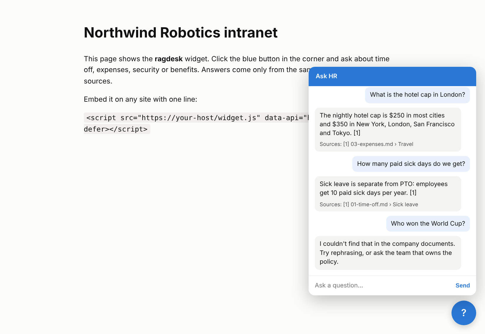

From documents to cited answers.
Retrieval finds the sections, the answer cites them, and a guardrail checks the citations.
Answers from your company's documents, with a citation for every sentence, and “I don't know” instead of a guess.
2026
Cited. Evaluated. Honest.Point it at a folder of policies, handbooks or product docs. Employees or customers ask questions on your website, in Slack or over the API. Every answer cites the section it came from, and when the documents don't say, it says it doesn't know.
How it works
Retrieval finds the sections, the answer cites them, and a guardrail checks the citations.
01
Markdown, HTML and PDF, in sections
02
Keyword and vector search, fused
03
Every sentence with a citation
04
No valid citation, no answer
05
Website, Slack, API or CLI
Built so an answer is either sourced or declined.
BM25 keyword search plus vector search, merged with reciprocal-rank fusion: exact terms and paraphrases both find the right section.
01
Every sentence carries a [n] citation that maps to a document and section.
02
It declines when retrieval finds nothing relevant, and when the answer has no valid citation.
03
Golden questions measure hit rate, MRR, answer accuracy, citation precision and correct declines.
04
With no API key it answers extractively, with verbatim sentences and citations.
05
A REST API, a one-line website widget, a Slack bot, a CLI and Docker.
06
Results
Offline baseline with no LLM: 24 questions on a fictional company handbook, 20 answerable and 4 it must decline.
retrieval hit@5 and answer accuracy on the 20 answerable questions.
false declines: it never refused a question the documents answer.
unanswerable questions declined. The miss (dress code) is where an LLM helps.

Wherever people ask the same questions your documents already answer.
Leave, travel and expenses, with the section.
For HR teams
01
How-tos from your runbooks.
For IT support
02
A widget on your docs site.
For support teams
03
New hires ask the handbook in Slack.
For people operations
04
Product facts with sources.
For sales teams
05
Quoted with sources, never guessed.
For risk and compliance
06
Free under the MIT license. Runs offline; add an Anthropic key and model id for fluent answers.
Clone
git clone https://github.com/faizanreza-cs/ragdesk && cd ragdeskInstall, then index the samples
make setup
make indexAsk
ragdesk ask "What is the hotel cap in London?"I build document assistants and AI agents like this one for teams with too many questions.
Open to freelance projects and full-time roles.
Yes. With no API key it answers extractively, with verbatim sentences and citations. Add an Anthropic or OpenAI key for fluent answers.
Two guardrails: it declines when retrieval finds nothing relevant, and when the answer has no valid citation. An answer citing a source it wasn't given is declined.
Yes, with one script tag. For a public embed, set the allowed origins and rate-limit /ask at your proxy, since each question can call a paid LLM.
Keyword search finds exact terms like 401(k); vector search finds paraphrases. Where the offline baseline misses one ("When is payday?"), API embeddings or query rewriting fix it.
I can set RAGdesk up on your docs and measure it on the questions your team gets.